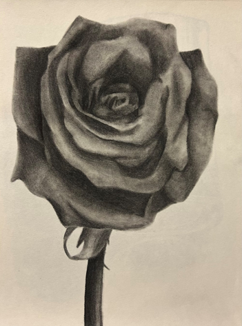
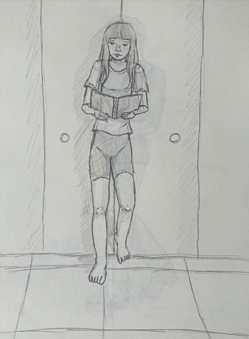
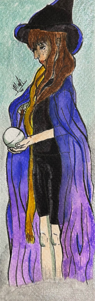
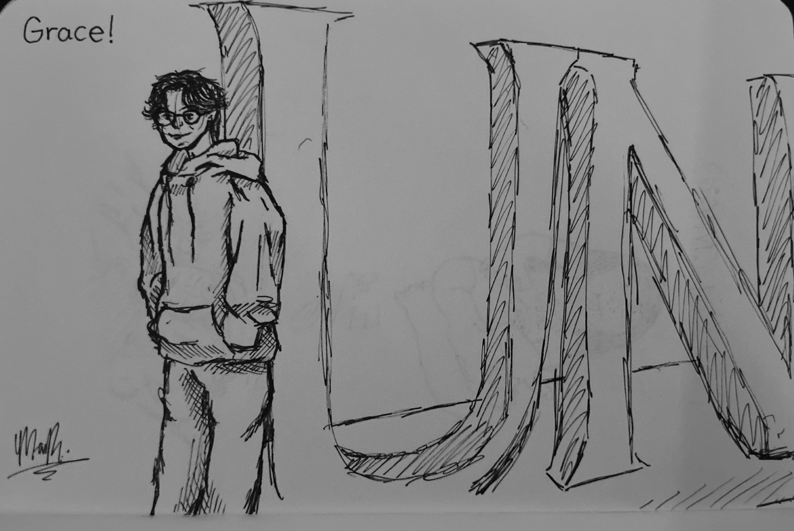

A collection of still lifes and observational drawings demonstrating traditional fundamentals.
Charcoal Still Life, charcoal on paper, 16 x 20in, 2025Graphite Still Life, graphite on paper, 16 x 20in, 2025Ink Still Life, India ink on paper, 20 x 16in, 2025What Remains, ink on paper, 12 x 9in, 2025Extra, Extra!, charcoal on paper, 12 x 9in, 2025Summer's Harvest, graphite on paper, 12 x 9in, 2025Toppled Glass, graphite on paper, 9 x 12in, 2025Light Landing, graphite on paper, 9 x 12in, 2025

Bloom, charcoal on paper, 9 x 12in, 2025

Reading, graphite on paper, 9 x 12in, 2025

Magic, watercolor on paper, 2 x 6in, 2025

UNF Figure Sketch, pen on paper, 8 x 5in, 2026Memories, digital, 7 x 5in, 2026Footsteps in the Wilderness, digital, 1620 x 2160px, 2025